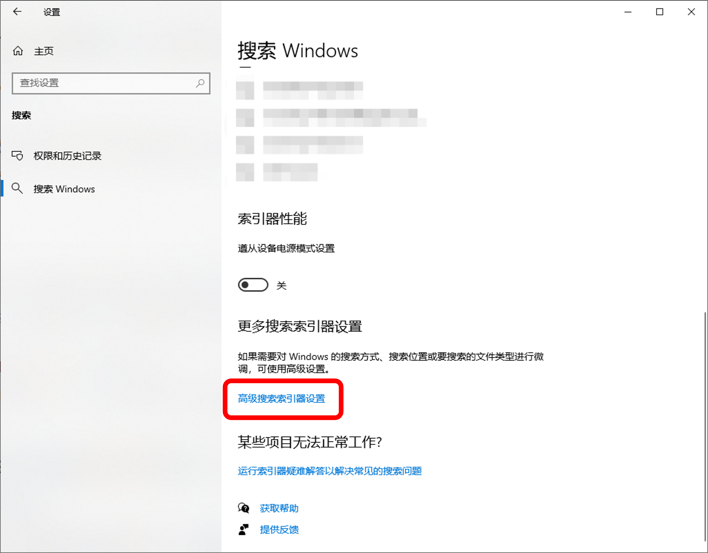
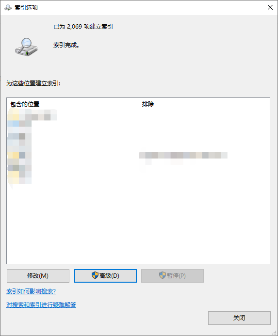
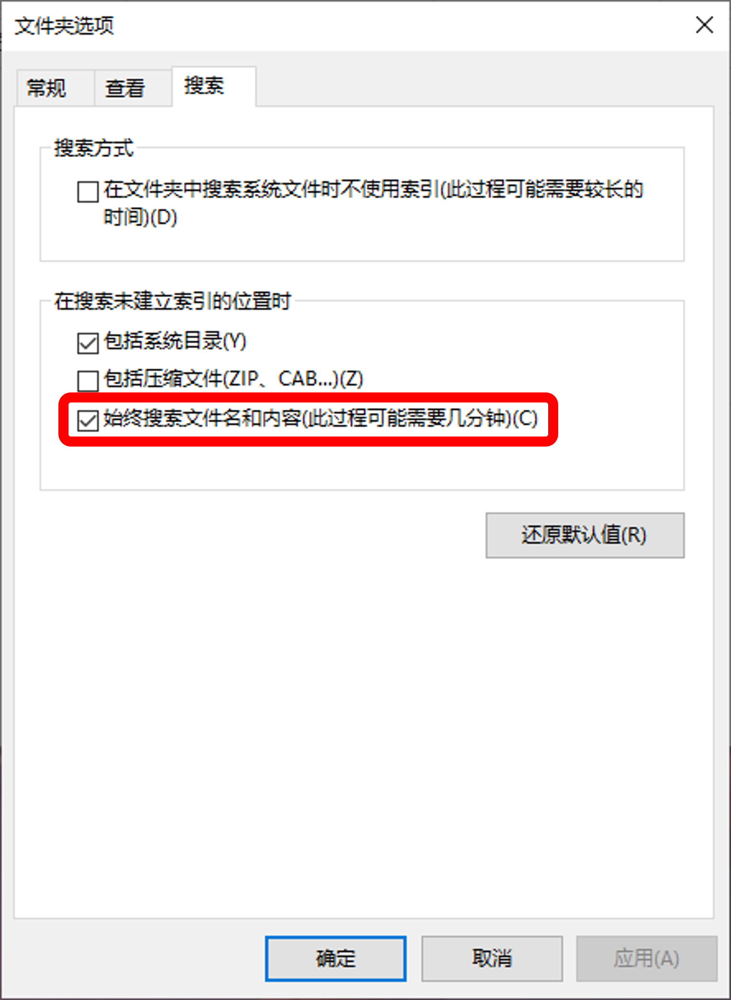

Windows 自带搜索工具
一、建立索引
- 打开索引选项
Windows10为 设置 –> 搜索 –> 搜索Windows –> 高级搜索索引器设置

Windows11为 设置 –> 隐私和安全 –> 搜索Windows –> 高级索引选项
- 在索引选项的修改中添加文件夹路径

- 在索引选项的高级中选择“为属性和文件内容添加索引”
二、搜索文件名和文件内容
Windows10为 文件资源管理器 –> 文件 –> 更改文件夹和搜索选项
Windows11为 文件资源管理器 –> 更多(三个点) –> 选项
选择始终搜索文件名和内容
